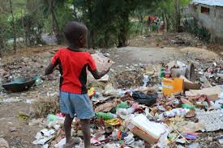
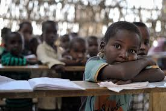
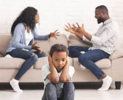

What are some causes of crime?
Causes of crimes are
- poverty: lack of money and resources can lead to desperate choices. 
- Peer pressure: friends influencing someone to do something wrong.
- Lack of education or opportunities: fewer chances to succeed may lead to crime. 
- Family problems: abuse, neglect, or unstable homes can affect behavior. 
- Drug or alcohol use: substances can lead to poor decisions.
- Mental or emotional struggles: stress, trauma, or untreated issues.
- Community environment: unsafe neighborhoods or negative influences.